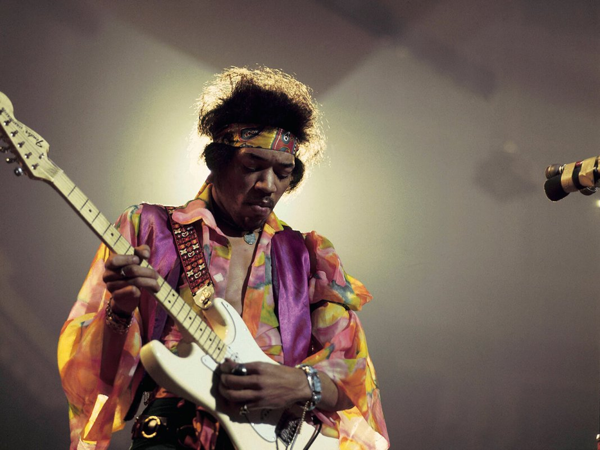
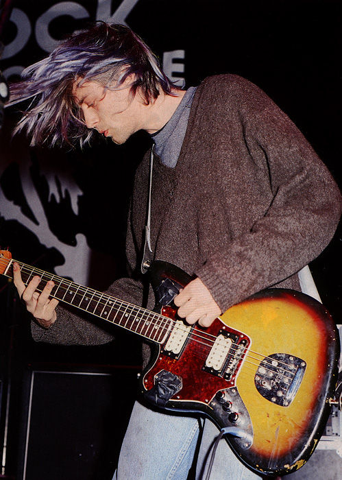
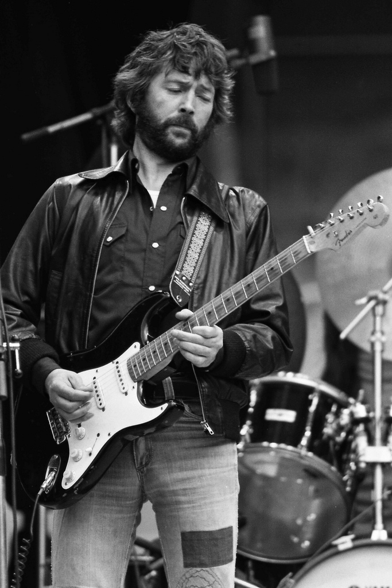

Відомі користувачі Fender
| Фото |
Ім'я |
Модель |
|  |
Джиммі Гендрікс |
Stratocaster |
| Легендарний гітарист, відомий своїм новаторським підходом до гри. Він часто використовував перевернутий праворукий Fender Stratocaster, граючи на ньому лівою рукою. Це створювало унікальний звук та естетику. Його білий Stratocaster став іконою рок-музики. |
|  |
Курт Кобейн |
Jaguar, Mustang, Jag-Stang |
| Фронтмен гурту Nirvana, Кобейн відомий своїм сирим і енергійним стилем гри. Він часто грав на Fender Jaguar та Mustang, а також на гібридній моделі Jag-Stang, яку він сам спроектував у співпраці з Fender. Ці гітари підкреслювали його унікальний звук та стиль. |
|  |
Ерік Клептон |
Stratocaster ("Blackie") |
| Один із найвпливовіших гітаристів усіх часів, Клептон тісно пов'язаний з Fender Stratocaster. Його улюблений інструмент, відомий як "Blackie", був зібраний із частин трьох різних Stratocaster 1950-х років. Ця гітара супроводжувала його протягом значної частини кар'єри. |
|
Джоні Грінвуд |
Telecaster Plus |
| Гітарист Radiohead, Грінвуд відомий своїм експериментальним підходом до музики. Він часто використовує Fender Telecaster Plus, яка дозволяє йому створювати широкий спектр звуків, від чистих тонів до агресивних дисторшнів. |
|
Дейв Мюррей |
Stratocaster ("Black Strat") |
| Гітарист Iron Maiden, Мюррей відомий використанням Fender Stratocaster. Його улюблена гітара, відома як "Black Strat", супроводжувала його протягом більшої частини кар'єри та стала невід'ємною частиною звучання гурту. |